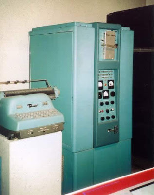

Bendix G-15 Emulator –
Hosting Site Home
This site hosts the current version of the retro-g15 emulator, an implementation of the Bendix G-15D computer system that runs in a web browser.

Main Links
- G-15 Emulator Home Page
The home page from which you can start the emulator.
Please see the Getting Started and Using the Control Panel wiki pages for information on setting up and running the emulator before trying to start it from the home page.
- Project Wiki
Documentation to assist you in setting up and operating the emulator.
- Open Source Project
Source code, documentation, and other developer resources for the retro-g15 emulator project at GitHub.
- G-15 Documents at bitsavers.org
A collection of scanned copies of original Bendix manuals and other reference materials for the G-15 system. This project would not have been possible without the availability of these materials.
- David Green's G-15 site
A description of the G-15 and some other early computers.
Like this? Check out these emulators:
Burroughs B5500 •
Burroughs 220 •
ElectroData 205
Revised
2022-04-18